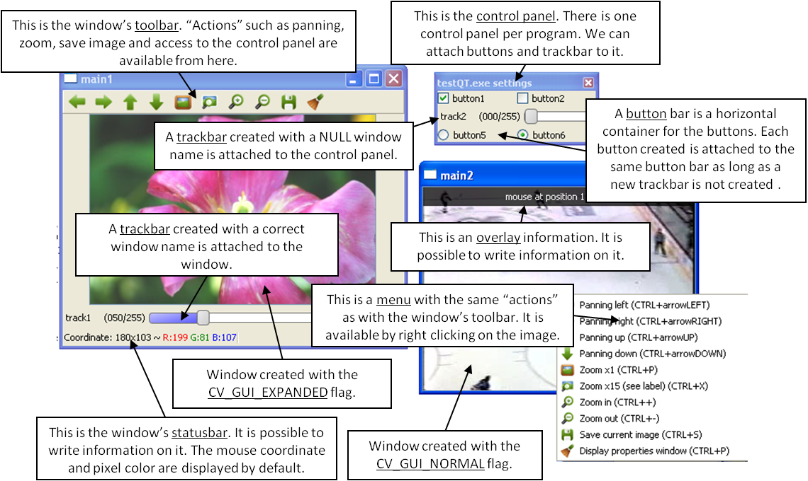

Qt New Functions¶
This figure explains new functionality implemented with Qt* GUI. The new GUI provides a statusbar, a toolbar, and a control panel. The control panel can have trackbars and buttonbars attached to it. If you cannot see the control panel, press Ctrl+P or right-click any Qt window and select Display properties window.
- To attach a trackbar, the window name parameter must be NULL.
- To attach a buttonbar, a button must be created. If the last bar attached to the control panel is a buttonbar, the new button is added to the right of the last button. If the last bar attached to the control panel is a trackbar, or the control panel is empty, a new buttonbar is created. Then, a new button is attached to it.
See below the example used to generate the figure:
int main(int argc, char *argv[])
int value = 50;
int value2 = 0;
cvNamedWindow("main1",CV_WINDOW_NORMAL);
cvNamedWindow("main2",CV_WINDOW_AUTOSIZE | CV_GUI_NORMAL);
cvCreateTrackbar( "track1", "main1", &value, 255, NULL);//OK tested
char* nameb1 = "button1";
char* nameb2 = "button2";
cvCreateButton(nameb1,callbackButton,nameb1,CV_CHECKBOX,1);
cvCreateButton(nameb2,callbackButton,nameb2,CV_CHECKBOX,0);
cvCreateTrackbar( "track2", NULL, &value2, 255, NULL);
cvCreateButton("button5",callbackButton1,NULL,CV_RADIOBOX,0);
cvCreateButton("button6",callbackButton2,NULL,CV_RADIOBOX,1);
cvSetMouseCallback( "main2",on_mouse,NULL );
IplImage* img1 = cvLoadImage("files/flower.jpg");
IplImage* img2 = cvCreateImage(cvGetSize(img1),8,3);
CvCapture* video = cvCaptureFromFile("files/hockey.avi");
IplImage* img3 = cvCreateImage(cvGetSize(cvQueryFrame(video)),8,3);
while(cvWaitKey(33) != 27)
{
cvAddS(img1,cvScalarAll(value),img2);
cvAddS(cvQueryFrame(video),cvScalarAll(value2),img3);
cvShowImage("main1",img2);
cvShowImage("main2",img3);
}
cvDestroyAllWindows();
cvReleaseImage(&img1);
cvReleaseImage(&img2);
cvReleaseImage(&img3);
cvReleaseCapture(&video);
return 0;
}
setWindowProperty¶
Changes parameters of a window dynamically.
-
C++:
setWindowProperty(const string& winname, int prop_id, double prop_value)¶
-
Python:
cv2.setWindowProperty(winname, prop_id, prop_value) → None¶
-
C:
cvSetWindowProperty(const char* name, int prop_id, double prop_value)¶ Parameters: - name – Name of the window.
- prop_id –
Window property to edit. The following operation flags are available:
- CV_WND_PROP_FULLSCREEN Change if the window is fullscreen (
CV_WINDOW_NORMALorCV_WINDOW_FULLSCREEN). - CV_WND_PROP_AUTOSIZE Change if the window is resizable (
CV_WINDOW_NORMALorCV_WINDOW_AUTOSIZE). - CV_WND_PROP_ASPECTRATIO Change if the aspect ratio of the image is preserved (
CV_WINDOW_FREERATIOorCV_WINDOW_KEEPRATIO).
- CV_WND_PROP_FULLSCREEN Change if the window is fullscreen (
- prop_value –
New value of the window property. The following operation flags are available:
- CV_WINDOW_NORMAL Change the window to normal size or make the window resizable.
- CV_WINDOW_AUTOSIZE Constrain the size by the displayed image. The window is not resizable.
- CV_WINDOW_FULLSCREEN Change the window to fullscreen.
- CV_WINDOW_FREERATIO Make the window resizable without any ratio constraints.
- CV_WINDOW_KEEPRATIO Make the window resizable, but preserve the proportions of the displayed image.
The function setWindowProperty enables changing properties of a window.
getWindowProperty¶
Provides parameters of a window.
-
C++:
getWindowProperty(const string& winname, int prop_id)¶
-
Python:
cv2.getWindowProperty(winname, prop_id) → retval¶
-
C:
cvGetWindowProperty(const char* name, int prop_id)¶ Parameters: - name – Name of the window.
- prop_id –
Window property to retrieve. The following operation flags are available:
- CV_WND_PROP_FULLSCREEN Change if the window is fullscreen (
CV_WINDOW_NORMALorCV_WINDOW_FULLSCREEN). - CV_WND_PROP_AUTOSIZE Change if the window is resizable (
CV_WINDOW_NORMALorCV_WINDOW_AUTOSIZE). - CV_WND_PROP_ASPECTRATIO Change if the aspect ratio of the image is preserved (
CV_WINDOW_FREERATIOorCV_WINDOW_KEEPRATIO).
- CV_WND_PROP_FULLSCREEN Change if the window is fullscreen (
See
setWindowProperty() to know the meaning of the returned values.
The function getWindowProperty returns properties of a window.
fontQt¶
Creates the font to draw a text on an image.
-
C++:
fontQt(const string& nameFont, int pointSize=-1, Scalar color=Scalar::all(0), int weight=CV_FONT_NORMAL, int style=CV_STYLE_NORMAL, int spacing=0)¶
-
C:
cvFontQt(const char* nameFont, int pointSize=-1, CvScalar color=cvScalarAll(0), int weight=CV_FONT_NORMAL, int style=CV_STYLE_NORMAL, int spacing=0)¶ Parameters: - nameFont – Name of the font. The name should match the name of a system font (such as Times). If the font is not found, a default one is used.
- pointSize – Size of the font. If not specified, equal zero or negative, the point size of the font is set to a system-dependent default value. Generally, this is 12 points.
- color – Color of the font in BGRA where A = 255 is fully transparent. Use the macro
CV _ RGBfor simplicity. - weight –
Font weight. The following operation flags are available:
- CV_FONT_LIGHT Weight of 25
- CV_FONT_NORMAL Weight of 50
- CV_FONT_DEMIBOLD Weight of 63
- CV_FONT_BOLD Weight of 75
- CV_FONT_BLACK Weight of 87
You can also specify a positive integer for better control.
- style –
Font style. The following operation flags are available:
- CV_STYLE_NORMAL Normal font
- CV_STYLE_ITALIC Italic font
- CV_STYLE_OBLIQUE Oblique font
- spacing – Spacing between characters. It can be negative or positive.
The function fontQt creates a CvFont object. This CvFont is not compatible with putText .
A basic usage of this function is the following:
CvFont font = fontQt(''Times'');
addText( img1, ``Hello World !'', Point(50,50), font);
addText¶
Creates the font to draw a text on an image.
-
C++:
addText(const Mat& img, const string& text, Point org, CvFont font)¶
-
C:
cvAddText(const CvArr* img, const char* text, CvPoint org, CvFont* arg2)¶ Parameters: - img – 8-bit 3-channel image where the text should be drawn.
- text – Text to write on an image.
- org – Point(x,y) where the text should start on an image.
- font – Font to use to draw a text.
The function addText draws
text
on an image
img
using a specific font
font
(see example fontQt() )
displayOverlay¶
Displays a text on a window image as an overlay for a specified duration.
-
C++:
displayOverlay(const string& winname, const string& text, int delayms=0 )¶
-
C:
cvDisplayOverlay(const char* name, const char* text, int delayms=0)¶ Parameters: - name – Name of the window.
- text – Overlay text to write on a window image.
- delayms – The period (in milliseconds), during which the overlay text is displayed. If this function is called before the previous overlay text timed out, the timer is restarted and the text is updated. If this value is zero, the text never disappears.
The function displayOverlay displays useful information/tips on top of the window for a certain amount of time delayms. The function does not modify the image, displayed in the window, that is, after the specified delay the original content of the window is restored.
displayStatusBar¶
Displays a text on the window statusbar during the specified period of time.
-
C++:
displayStatusBar(const string& winname, const string& text, int delayms=0 )¶
-
C:
cvDisplayStatusBar(const char* name, const char* text, int delayms=0)¶ Parameters: - name – Name of the window.
- text – Text to write on the window statusbar.
- delayms – Duration (in milliseconds) to display the text. If this function is called before the previous text timed out, the timer is restarted and the text is updated. If this value is zero, the text never disappears.
The function displayOverlay displays useful information/tips on top of the window for a certain amount of time
delayms
. This information is displayed on the window statusbar (the window must be created with the CV_GUI_EXPANDED flags).
setOpenGlDrawCallback¶
Sets a callback function to be called to draw on top of displayed image.
-
C++:
setOpenGlDrawCallback(const string& winname, OpenGlDrawCallback onOpenGlDraw, void* userdata=0 )¶
-
C:
cvSetOpenGlDrawCallback(const char* window_name, CvOpenGlDrawCallback callback, void* userdata=NULL )¶ Parameters: - window_name – Name of the window.
- onOpenGlDraw – Pointer to the function to be called every frame. This function should be prototyped as
void Foo(void*). - userdata – Pointer passed to the callback function. (Optional)
The function setOpenGlDrawCallback can be used to draw 3D data on the window. See the example of callback function below:
void on_opengl(void* param)
{
glLoadIdentity();
glTranslated(0.0, 0.0, -1.0);
glRotatef( 55, 1, 0, 0 );
glRotatef( 45, 0, 1, 0 );
glRotatef( 0, 0, 0, 1 );
static const int coords[6][4][3] = {
{ { +1, -1, -1 }, { -1, -1, -1 }, { -1, +1, -1 }, { +1, +1, -1 } },
{ { +1, +1, -1 }, { -1, +1, -1 }, { -1, +1, +1 }, { +1, +1, +1 } },
{ { +1, -1, +1 }, { +1, -1, -1 }, { +1, +1, -1 }, { +1, +1, +1 } },
{ { -1, -1, -1 }, { -1, -1, +1 }, { -1, +1, +1 }, { -1, +1, -1 } },
{ { +1, -1, +1 }, { -1, -1, +1 }, { -1, -1, -1 }, { +1, -1, -1 } },
{ { -1, -1, +1 }, { +1, -1, +1 }, { +1, +1, +1 }, { -1, +1, +1 } }
};
for (int i = 0; i < 6; ++i) {
glColor3ub( i*20, 100+i*10, i*42 );
glBegin(GL_QUADS);
for (int j = 0; j < 4; ++j) {
glVertex3d(0.2 * coords[i][j][0], 0.2 * coords[i][j][1], 0.2 * coords[i][j][2]);
}
glEnd();
}
}
saveWindowParameters¶
Saves parameters of the specified window.
-
C++:
saveWindowParameters(const string& windowName)¶
-
C:
cvSaveWindowParameters(const char* name)¶ Parameters: - name – Name of the window.
The function saveWindowParameters saves size, location, flags, trackbars value, zoom and panning location of the window
window_name .
loadWindowParameters¶
Loads parameters of the specified window.
-
C++:
loadWindowParameters(const string& windowName)¶
-
C:
cvLoadWindowParameters(const char* name)¶ Parameters: - name – Name of the window.
The function loadWindowParameters loads size, location, flags, trackbars value, zoom and panning location of the window
window_name .
createButton¶
Attaches a button to the control panel.
Parameters: - button_name – Name of the button.
- on_change – Pointer to the function to be called every time the button changes its state. This function should be prototyped as
void Foo(int state,*void);. state is the current state of the button. It could be -1 for a push button, 0 or 1 for a check/radio box button. - userdata – Pointer passed to the callback function.
- button_type –
Optional type of the button.
- CV_PUSH_BUTTON Push button
- CV_CHECKBOX Checkbox button
- CV_RADIOBOX Radiobox button. The radiobox on the same buttonbar (same line) are exclusive, that is only one can be selected at a time.
- initial_button_state – Default state of the button. Use for checkbox and radiobox. Its value could be 0 or 1. (Optional)
The function createButton attaches a button to the control panel. Each button is added to a buttonbar to the right of the last button.
A new buttonbar is created if nothing was attached to the control panel before, or if the last element attached to the control panel was a trackbar.
See below various examples of the createButton function call:
createButton(NULL,callbackButton);//create a push button "button 0", that will call callbackButton.
createButton("button2",callbackButton,NULL,CV_CHECKBOX,0);
createButton("button3",callbackButton,&value);
createButton("button5",callbackButton1,NULL,CV_RADIOBOX);
createButton("button6",callbackButton2,NULL,CV_PUSH_BUTTON,1);
Help and Feedback
You did not find what you were looking for?- Ask a question on the Q&A forum.
- If you think something is missing or wrong in the documentation, please file a bug report.